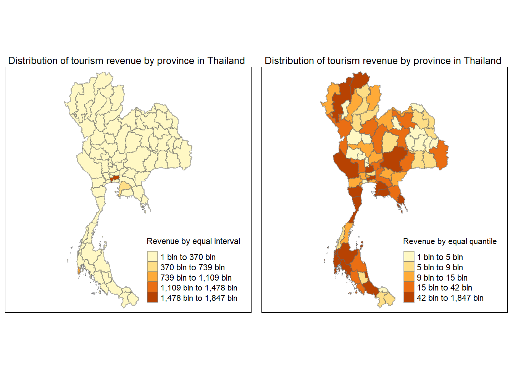

set.seed(1234)
pacman::p_load(sf,spNetwork,raster,spatstat,tmap,tidyverse,sp,maptools,spNetwork,knitr,ggplot2,dplyr)Take-home Exercise 2: Discovering impacts of COVID-19 on Thailand tourism economy at the province level using spatial and spatio-temporal statistics
1 Overview
Tourism is one of Thailand’s largest industries, accounting for some 20% of the gross domestic product (GDP). In 2019, Thailand earned 90 billion US$ from domestic and international tourism, but the COVID-19 pandemic caused revenues to crash to 24 billion US$ in 2020.
2 Getting Started
2.1 Objectives
In view of this, we need to discover
if the key indicators of tourism economy of Thailand are independent from space and space and time.
If the tourism economy is indeed spatial and spatio-temporal dependent, then, you would like to detect where are the clusters and outliers, and the emerging hot spot/cold spot areas
2.2 The Study Area
The focus of this study would in the Thailand, at the province level:
3 Data Preparation
3.1 Geospatial
These data sets are in shp format
- Thailand - Subnational Administrative Boundaries, available publicly from HDX
This data sets are in csv format
- Thailand Domestic Tourism Statistics, available publicly from Kaggle
4 Data Wrangling
4.1 Thailand Road Accident 2019-2023
4.1.1 Importing Attribute Data into R
We will import thailand_domestic_tourism_2019_2023_ver2.csv file into RStudio and save the file into an R dataframe called thaitour
thaitour <- read_csv("C:/ngmengye/ISSS626-GAA/Take-home_Ex/Take-home_Ex02/data/aspatial/thailand_domestic_tourism_2019_2023_ver2.csv")Rows: 30800 Columns: 7
── Column specification ────────────────────────────────────────────────────────
Delimiter: ","
chr (5): province_thai, province_eng, region_thai, region_eng, variable
dbl (1): value
date (1): date
ℹ Use `spec()` to retrieve the full column specification for this data.
ℹ Specify the column types or set `show_col_types = FALSE` to quiet this message.head(thaitour)# A tibble: 6 × 7
date province_thai province_eng region_thai region_eng variable value
<date> <chr> <chr> <chr> <chr> <chr> <dbl>
1 2019-01-01 กรุงเทพมหานคร Bangkok ภาคกลาง central ratio_t… 93.4
2 2019-01-01 ลพบุรี Lopburi ภาคกลาง central ratio_t… 61.3
3 2019-01-01 พระนครศรีอยุธยา Phra Nakhon Si… ภาคกลาง central ratio_t… 73.4
4 2019-01-01 สระบุรี Saraburi ภาคกลาง central ratio_t… 67.3
5 2019-01-01 ชัยนาท Chainat ภาคกลาง central ratio_t… 79.3
6 2019-01-01 นครปฐม Nakhon Pathom ภาคกลาง central ratio_t… 71.7Check if there are any missing values.
sum(is.na(thaitour$value))[1] 0Check if the values in the variable column are balanced or equally represented.
table(thaitour$variable)
no_tourist_all no_tourist_foreign no_tourist_stay no_tourist_thai
3850 3850 3850 3850
ratio_tourist_stay revenue_all revenue_foreign revenue_thai
3850 3850 3850 3850 Generate the statistics summary of the variable.
summary_by_variable <- thaitour %>%
group_by(variable) %>%
summarise(
count = n(),
mean = mean(value, na.rm = TRUE),
std = sd(value, na.rm = TRUE),
min = min(value, na.rm = TRUE),
Q1 = quantile(value, 0.25, na.rm = TRUE),
median = median(value, na.rm = TRUE),
Q3 = quantile(value, 0.75, na.rm = TRUE),
max = max(value, na.rm = TRUE)
)
# Print the summary table
print(summary_by_variable)# A tibble: 8 × 9
variable count mean std min Q1 median Q3 max
<chr> <int> <dbl> <dbl> <dbl> <dbl> <dbl> <dbl> <dbl>
1 no_tourist_all 3850 2.06e5 4.54e5 0 3.91e4 9.21e4 2.04e5 6.13e 6
2 no_tourist_foreign 3850 3.24e4 1.70e5 0 4.93e1 5.53e2 5.19e3 2.47e 6
3 no_tourist_stay 3850 1.05e5 2.52e5 0 1.63e4 4.46e4 9.09e4 3.34e 6
4 no_tourist_thai 3850 1.74e5 3.18e5 0 3.72e4 8.88e4 1.84e5 4.09e 6
5 ratio_tourist_stay 3850 3.89e1 2.27e1 0 2.02e1 4.18e1 5.62e1 9.59e 1
6 revenue_all 3850 1.34e9 6.57e9 0 6.33e7 1.95e8 5.06e8 1.10e11
7 revenue_foreign 3850 6.80e8 4.65e9 -4250 1.10e5 1.54e6 1.74e7 8.50e10
8 revenue_thai 3850 6.64e8 2.28e9 0 5.92e7 1.77e8 4.60e8 4.51e10Generate the boxplot for the variables.
first_group <- thaitour %>%
filter(variable %in% c("no_tourist_all", "no_tourist_foreign", "no_tourist_stay", "ratio_tourist_stay"))
ggplot(first_group, aes(x = variable, y = value)) +
geom_boxplot(fill = "lightblue", color = "black") +
labs(title = "Boxplots for Tourist-Related Variables",
x = "Variable",
y = "Value") +
theme_minimal() +
theme(axis.text.x = element_text(angle = 45, hjust = 1))second_group <- thaitour %>%
filter(variable %in% c("revenue_all", "revenue_foreign", "revenue_thai"))
ggplot(second_group, aes(x = variable, y = value)) +
geom_boxplot(fill = "lightgreen", color = "black") +
labs(title = "Boxplots for Revenue-Related Variables",
x = "Variable",
y = "Value") +
theme_minimal() +
theme(axis.text.x = element_text(angle = 45, hjust = 1)) Boxplot of the variables without outliers.
# First group: Tourist-related variables
first_group <- thaitour %>%
filter(variable %in% c("no_tourist_all", "no_tourist_foreign", "no_tourist_stay", "ratio_tourist_stay"))
ggplot(first_group, aes(x = variable, y = value)) +
geom_boxplot(fill = "lightblue", color = "black", outlier.shape = NA) +
coord_cartesian(ylim = c(0, 250000)) +# Remove outliers
labs(title = "Boxplots for Tourist-Related Variables",
x = "Variable",
y = "Value") +
theme_minimal() +
theme(axis.text.x = element_text(angle = 45, hjust = 1))# Second group: Revenue-related variables
second_group <- thaitour %>%
filter(variable %in% c("revenue_all", "revenue_foreign", "revenue_thai"))
ggplot(second_group, aes(x = variable, y = value)) +
geom_boxplot(fill = "lightgreen", color = "black", outlier.shape = NA) +
coord_cartesian(ylim = c(0, 600000000))+
labs(title = "Boxplots for Revenue-Related Variables",
x = "Variable",
y = "Value") +
theme_minimal() +
theme(axis.text.x = element_text(angle = 45, hjust = 1))Generate the summary statistics of the attribute data.
summary_by_variable <- thaitour %>%
group_by(variable) %>%
summarise(
count = n(),
mean_value = mean(value, na.rm = TRUE),
median_value = median(value, na.rm = TRUE),
min_value = min(value, na.rm = TRUE),
max_value = max(value, na.rm = TRUE),
sd_value = sd(value, na.rm = TRUE)
)
# View the summary
print(summary_by_variable)# A tibble: 8 × 7
variable count mean_value median_value min_value max_value sd_value
<chr> <int> <dbl> <dbl> <dbl> <dbl> <dbl>
1 no_tourist_all 3850 2.06e5 92122. 0 6.13e 6 4.54e5
2 no_tourist_foreign 3850 3.24e4 553 0 2.47e 6 1.70e5
3 no_tourist_stay 3850 1.05e5 44579 0 3.34e 6 2.52e5
4 no_tourist_thai 3850 1.74e5 88782 0 4.09e 6 3.18e5
5 ratio_tourist_stay 3850 3.89e1 41.8 0 9.59e 1 2.27e1
6 revenue_all 3850 1.34e9 195495000 0 1.10e11 6.57e9
7 revenue_foreign 3850 6.80e8 1540000 -4250 8.50e10 4.65e9
8 revenue_thai 3850 6.64e8 177310000 0 4.51e10 2.28e9# First, ensure that the year is extracted from the 'date' column
thaitour <- thaitour %>%
mutate(year = as.numeric(format(as.Date(date), "%Y")))
# Filter for the variable 'no_tourist_all' for years 2019 to 2023
data_no_tourist <- thaitour %>%
filter(variable == "no_tourist_all", year %in% c(2019, 2020, 2021, 2022, 2023))
# Create a boxplot for 'no_tourist_all'
ggplot(data_no_tourist, aes(x = factor(year), y = value)) +
geom_boxplot(fill = "skyblue", color = "black") +
labs(title = "Boxplot of No_Tourist_All by Year",
x = "Year",
y = "Number of Tourists (All)") +
theme_minimal()data_revenue <- thaitour %>%
filter(variable == "revenue_all", year %in% c(2019, 2020, 2021, 2022, 2023))
# Create a boxplot for 'revenue_all'
ggplot(data_revenue, aes(x = factor(year), y = value)) +
geom_boxplot(fill = "lightgreen", color = "black") +
labs(title = "Boxplot of Revenue_All by Year",
x = "Year",
y = "Revenue (All)") +
theme_minimal()# Load necessary libraries
library(ggplot2)
library(dplyr)
# First, ensure that the year is extracted from the 'date' column
# First, ensure that the year is extracted from the 'date' column
thaitour <- thaitour %>%
mutate(year = as.numeric(format(as.Date(date), "%Y")))
# Filter for 'no_tourist_all' variable for the years 2019 to 2023
data_no_tourist <- thaitour %>%
filter(variable == "no_tourist_all", year %in% c(2019, 2020, 2021, 2022, 2023))
# Adjust the scale range for 'no_tourist_all' and create boxplot
ggplot(data_no_tourist, aes(x = factor(year), y = value)) +
geom_boxplot(fill = "skyblue", color = "black", outlier.shape = NA) +
coord_cartesian(ylim = c(0, 400000)) + # Adjust this range as necessary
labs(title = "Boxplot of No_Tourist_All by Year (Without Outliers)",
x = "Year",
y = "Number of Tourists (All)") +
theme_minimal()
data_revenue <- thaitour %>%
filter(variable == "revenue_all", year %in% c(2019, 2020, 2021, 2022, 2023))
# Adjust the scale range for 'revenue_all' and create boxplot
ggplot(data_revenue, aes(x = factor(year), y = value)) +
geom_boxplot(fill = "lightgreen", color = "black", outlier.shape = NA) +
coord_cartesian(ylim = c(0, 1300000000)) + # Adjust this range as necessary
labs(title = "Boxplot of Revenue_All by Year (Without Outliers)",
x = "Year",
y = "Revenue (All)") +
theme_minimal()# Ensure the 'year' is extracted from the 'date' column
thaitour <- thaitour %>%
mutate(year = as.numeric(format(as.Date(date), "%Y")))
# Filter the data to include only the variables 'no_tourist_all' and 'revenue_all'
filtered_data <- thaitour %>%
filter(variable %in% c("no_tourist_all", "revenue_all")) %>%
select(province_eng, year, variable, value)
# Sum the values by province, year, and variable
summed_data <- filtered_data %>%
group_by(province_eng, year, variable) %>%
summarise(total_value = sum(value, na.rm = TRUE))`summarise()` has grouped output by 'province_eng', 'year'. You can override
using the `.groups` argument.# Spread the data so that each year/variable combination becomes a new column
reshaped_data <- summed_data %>%
unite("year_variable", year, variable, sep = "_") %>%
pivot_wider(names_from = year_variable, values_from = total_value)
# View the reshaped data
print(reshaped_data)# A tibble: 77 × 11
# Groups: province_eng [77]
province_eng `2019_no_tourist_all` `2019_revenue_all` `2020_no_tourist_all`
<chr> <dbl> <dbl> <dbl>
1 Amnat Charoen 306727 439290000 153692
2 Ang Thong 828556 1013520000 377321
3 Bangkok 66966562 1067813760000 23617914
4 Bueng Kan 606194 1070360000 359268
5 Buriram 2330523 4703950000 960463
6 Chachoengsao 3466731 5085780000 2072363
7 Chainat 853942 1336560000 394900
8 Chaiyaphum 1804320 2203120000 808093
9 Chanthaburi 2484480 8713840000 1421555
10 Chiang Mai 11165860 110670330000 6007763
# ℹ 67 more rows
# ℹ 7 more variables: `2020_revenue_all` <dbl>, `2021_no_tourist_all` <dbl>,
# `2021_revenue_all` <dbl>, `2022_no_tourist_all` <dbl>,
# `2022_revenue_all` <dbl>, `2023_no_tourist_all` <dbl>,
# `2023_revenue_all` <dbl># Load necessary libraries
library(ggplot2)
library(dplyr)
# Assuming reshaped_data is already created with 2019_revenue_all as one of the columns
bar_data <- reshaped_data %>%
select(province_eng, `2019_revenue_all`)
# Create a horizontal bar chart with provinces ordered by revenue in descending order
ggplot(bar_data, aes(x = `2019_revenue_all`, y = reorder(province_eng, `2019_revenue_all`))) +
geom_bar(stat = "identity", fill = "skyblue") +
labs(title = "Total Revenue by Province in 2019",
x = "Total Revenue",
y = "Province") +
theme_minimal() +
theme(axis.text.y = element_text(size = 8)) # Adjust font size of y-axis labels# Save the plot with increased dimensions
ggsave("total_revenue_2019.png", width = 10, height = 15)
# Assuming reshaped_data is already created with 2019_revenue_all as one of the columns
bar_data <- reshaped_data %>%
select(province_eng, `2019_no_tourist_all`)
# Create a horizontal bar chart with provinces ordered by revenue in descending order
ggplot(bar_data, aes(x = `2019_no_tourist_all`, y = reorder(province_eng, `2019_no_tourist_all`))) +
geom_bar(stat = "identity", fill = "skyblue") +
labs(title = "Total Tourists by Province in 2019",
x = "Total Revenue",
y = "Province") +
theme_minimal() +
theme(axis.text.y = element_text(size = 8)) # Adjust font size of y-axis labels# Save the plot with increased dimensions
ggsave("total_revenue_2019.png", width = 10, height = 15)We will import tha_admbnda_adm1_rtsd_20220121.csv file into RStudio and save the file into an R dataframe called thailand
thailand <- st_read(dsn = "C:/ngmengye/ISSS626-GAA/Take-home_Ex/Take-home_Ex02/data/geospatial",
layer = "tha_admbnda_adm1_rtsd_20220121")Reading layer `tha_admbnda_adm1_rtsd_20220121' from data source
`C:\ngmengye\ISSS626-GAA\Take-home_Ex\Take-home_Ex02\data\geospatial'
using driver `ESRI Shapefile'
Simple feature collection with 77 features and 16 fields
Geometry type: MULTIPOLYGON
Dimension: XY
Bounding box: xmin: 97.34336 ymin: 5.613038 xmax: 105.637 ymax: 20.46507
Geodetic CRS: WGS 84thailand_32647 <- st_transform(thailand, crs = 32647)st_geometry(thailand_32647)Geometry set for 77 features
Geometry type: MULTIPOLYGON
Dimension: XY
Bounding box: xmin: 325178.8 ymin: 620860.6 xmax: 1213656 ymax: 2263241
Projected CRS: WGS 84 / UTM zone 47N
First 5 geometries:MULTIPOLYGON (((674339.8 1543300, 674382.3 1543...MULTIPOLYGON (((687139.8 1517113, 687147.1 1517...MULTIPOLYGON (((644817.9 1559286, 644817.5 1559...MULTIPOLYGON (((704086 1575736, 704089.9 157550...MULTIPOLYGON (((662941.6 1620856, 662957.5 1620...plot(st_geometry(thailand_32647))# Sort 'thailand_32647' by 'ADM1_EN' in alphabetical order
thailand_32647_sorted <- thailand_32647 %>%
arrange(ADM1_EN)
# Sort the 'reshaped_data' by 'province_eng' to ensure matching order
reshaped_data_sorted <- reshaped_data %>%
arrange(province_eng)
# Create a comparison table with 'ADM1_EN' and 'province_eng' side by side
comparison_table <- thailand_32647_sorted %>%
select(ADM1_EN) %>%
bind_cols(reshaped_data_sorted %>% select(province_eng))Based on the comparison table, we need to correct the value in ADM1_EN before we join both datasets.
| Before | After |
|---|---|
| Buri Ram | Buriram |
| Chai Nat | Chainat |
| Chon Buri | Chonburi |
| Lop Buri | Lopburi |
| Nong Bua Lam Phu | Nong Bua Lamphu |
| Phangnga | Phang Nga |
| Prachin Buri | Prachinburi |
| Si Sa Ket | Sisaket |
# Replace specific values in the ADM1_EN column based on the mapping you provided
thailand_32647_sorted <- thailand_32647_sorted %>%
mutate(ADM1_EN = case_when(
ADM1_EN == "Buri Ram" ~ "Buriram",
ADM1_EN == "Chai Nat" ~ "Chainat",
ADM1_EN == "Chon Buri" ~ "Chonburi",
ADM1_EN == "Lop Buri" ~ "Lopburi",
ADM1_EN == "Nong Bua Lam Phu" ~ "Nong Bua Lamphu",
ADM1_EN == "Phangnga" ~ "Phang Nga",
ADM1_EN == "Prachin Buri" ~ "Prachinburi",
ADM1_EN == "Si Sa Ket" ~ "Sisaket",
TRUE ~ ADM1_EN # Keep all other values as they are
))
# View the updated table to ensure the replacements have been made
print(thailand_32647_sorted)Simple feature collection with 77 features and 16 fields
Geometry type: MULTIPOLYGON
Dimension: XY
Bounding box: xmin: 325178.8 ymin: 620860.6 xmax: 1213656 ymax: 2263241
Projected CRS: WGS 84 / UTM zone 47N
First 10 features:
Shape_Leng Shape_Area ADM1_EN ADM1_TH ADM1_PCODE ADM1_REF
1 3.927244 0.27531267 Amnat Charoen อำนาจเจริญ TH37 <NA>
2 1.739908 0.07920961 Ang Thong อ่างทอง TH15 <NA>
3 2.417227 0.13133873 Bangkok กรุงเทพมหานคร TH10 <NA>
4 4.414998 0.34078403 Bueng Kan บึงกาฬ TH38 <NA>
5 8.701860 0.84453704 Buriram บุรีรัมย์ TH31 <NA>
6 4.941453 0.43148401 Chachoengsao ฉะเชิงเทรา TH24 <NA>
7 2.896316 0.20907828 Chainat ชัยนาท TH18 <NA>
8 7.055513 1.06531930 Chaiyaphum ชัยภูมิ TH36 <NA>
9 5.130273 0.53331644 Chanthaburi จันทบุรี TH22 <NA>
10 13.346345 1.90054644 Chiang Mai เชียงใหม่ TH50 <NA>
ADM1ALT1EN ADM1ALT2EN ADM1ALT1TH ADM1ALT2TH ADM0_EN ADM0_TH ADM0_PCODE
1 <NA> <NA> <NA> <NA> Thailand ประเทศไทย TH
2 <NA> <NA> <NA> <NA> Thailand ประเทศไทย TH
3 <NA> <NA> <NA> <NA> Thailand ประเทศไทย TH
4 <NA> <NA> <NA> <NA> Thailand ประเทศไทย TH
5 <NA> <NA> <NA> <NA> Thailand ประเทศไทย TH
6 <NA> <NA> <NA> <NA> Thailand ประเทศไทย TH
7 <NA> <NA> <NA> <NA> Thailand ประเทศไทย TH
8 <NA> <NA> <NA> <NA> Thailand ประเทศไทย TH
9 <NA> <NA> <NA> <NA> Thailand ประเทศไทย TH
10 <NA> <NA> <NA> <NA> Thailand ประเทศไทย TH
date validOn validTo geometry
1 2019-02-18 2022-01-22 -001-11-30 MULTIPOLYGON (((1137720 180...
2 2019-02-18 2022-01-22 -001-11-30 MULTIPOLYGON (((643472.8 16...
3 2019-02-18 2022-01-22 -001-11-30 MULTIPOLYGON (((674339.8 15...
4 2019-02-18 2022-01-22 -001-11-30 MULTIPOLYGON (((965496 2045...
5 2019-02-18 2022-01-22 -001-11-30 MULTIPOLYGON (((921217 1750...
6 2019-02-18 2022-01-22 -001-11-30 MULTIPOLYGON (((722656.1 15...
7 2019-02-18 2022-01-22 -001-11-30 MULTIPOLYGON (((620165.4 17...
8 2019-02-18 2022-01-22 -001-11-30 MULTIPOLYGON (((772997.4 18...
9 2019-02-18 2022-01-22 -001-11-30 MULTIPOLYGON (((853764.8 13...
10 2019-02-18 2022-01-22 -001-11-30 MULTIPOLYGON (((554883.3 22...# Perform the left join with 'reshaped_data' on 'ADM1_TH' and 'province_eng'
thailand <- left_join(thailand_32647_sorted, reshaped_data, by = c("ADM1_EN" = "province_eng"))
# View the merged data
head(thailand)Simple feature collection with 6 features and 26 fields
Geometry type: MULTIPOLYGON
Dimension: XY
Bounding box: xmin: 628303 ymin: 1458481 xmax: 1149111 ymax: 2045538
Projected CRS: WGS 84 / UTM zone 47N
Shape_Leng Shape_Area ADM1_EN ADM1_TH ADM1_PCODE ADM1_REF
1 3.927244 0.27531267 Amnat Charoen อำนาจเจริญ TH37 <NA>
2 1.739908 0.07920961 Ang Thong อ่างทอง TH15 <NA>
3 2.417227 0.13133873 Bangkok กรุงเทพมหานคร TH10 <NA>
4 4.414998 0.34078403 Bueng Kan บึงกาฬ TH38 <NA>
5 8.701860 0.84453704 Buriram บุรีรัมย์ TH31 <NA>
6 4.941453 0.43148401 Chachoengsao ฉะเชิงเทรา TH24 <NA>
ADM1ALT1EN ADM1ALT2EN ADM1ALT1TH ADM1ALT2TH ADM0_EN ADM0_TH ADM0_PCODE
1 <NA> <NA> <NA> <NA> Thailand ประเทศไทย TH
2 <NA> <NA> <NA> <NA> Thailand ประเทศไทย TH
3 <NA> <NA> <NA> <NA> Thailand ประเทศไทย TH
4 <NA> <NA> <NA> <NA> Thailand ประเทศไทย TH
5 <NA> <NA> <NA> <NA> Thailand ประเทศไทย TH
6 <NA> <NA> <NA> <NA> Thailand ประเทศไทย TH
date validOn validTo 2019_no_tourist_all 2019_revenue_all
1 2019-02-18 2022-01-22 -001-11-30 306727 4.392900e+08
2 2019-02-18 2022-01-22 -001-11-30 828556 1.013520e+09
3 2019-02-18 2022-01-22 -001-11-30 66966562 1.067814e+12
4 2019-02-18 2022-01-22 -001-11-30 606194 1.070360e+09
5 2019-02-18 2022-01-22 -001-11-30 2330523 4.703950e+09
6 2019-02-18 2022-01-22 -001-11-30 3466731 5.085780e+09
2020_no_tourist_all 2020_revenue_all 2021_no_tourist_all 2021_revenue_all
1 153692 207630000 114422 139600000
2 377321 437720000 253957 260940000
3 23617914 254740160000 12571842 62699910000
4 359268 590240000 170383 218700000
5 960463 1828400000 785081 1456210000
6 2072363 2751900000 1148100 1338740000
2022_no_tourist_all 2022_revenue_all 2023_no_tourist_all 2023_revenue_all
1 221628 238920000 45008 49660000
2 670749 664380000 162867 180090000
3 38626450 340970080000 9569732 120743520000
4 721455 946360000 119225 165040000
5 2915436 5902490000 578748 1178770000
6 4620716 5133660000 887370 992750000
geometry
1 MULTIPOLYGON (((1137720 180...
2 MULTIPOLYGON (((643472.8 16...
3 MULTIPOLYGON (((674339.8 15...
4 MULTIPOLYGON (((965496 2045...
5 MULTIPOLYGON (((921217 1750...
6 MULTIPOLYGON (((722656.1 15...basemap <- tm_shape(thailand) +
tm_polygons() +
tm_text("ADM1_EN", size=0.5)
revenue <- qtm(thailand, "2019_revenue_all")
tmap_arrange(basemap, revenue, asp=1, ncol=2)Some legend labels were too wide. These labels have been resized to 0.64. Increase legend.width (argument of tm_layout) to make the legend wider and therefore the labels larger.